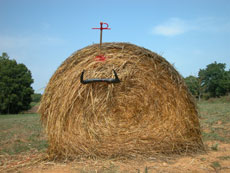

|
EL BRAU BLAU
THE BLUE BULL
Daniel V. Villamediana | Spanien 2008 | 63 Min.
Material : DV
Format: DVD
Originalsprache: ohne Dialoge
Drehbuch: Daniel V. Villamediana
Kamera: Pablo Morales Canedo
Ton: Lluis Galter
Sound Design : Alejandro Catillo
Schnitt: Daniel V. Villamediana, Pablo Morales Canedo
Mit Víctor J. Vázquez
Produktion: Eddie Saeta, El Toro Azul Porducciones
Vertrieb: Eddie Saeta
Ein Leben in Formen und Ritualen. Ein junger Mann, fasziniert von der Welt des Stierkampfs, lebt einsam auf dem Lande, isoliert und besessen. Der Stierkampf gilt als Synonym für: Erfolg, Reichtum, Respekt und Ehre. Seine offensichtliche Verletzung deutet darauf hin, dass er bereits einmal Kontakt mit diesem mythischen Kosmos hatte. Und ausscheiden musste. Man sieht ihn bei den konzentrierten Vorbereitungen auf einen neuen Kampf, wobei er seinen inneren Stierkampf auszutragen scheint.
Der Film zeigt einzig die Technik der Corrida, ohne das Endziel abzubilden. Ohne Stier und ohne Blut wird der Kampf zu einer allgemeingültigen Form der Auseinandersetzung mit sich selbst.
Daniel V. Villamediana, geb. 1975 in Valladolid. Studium der Geschichte und Kunstgeschichte. 2006 drehte er den Kurzfilm "Espacio público" und schreibt im selben Jahr das Drehbuch zu José Maria de Orbes "La línea recta". Villamediana ist außerdem Filmkritiker bei "Letras de Cine" und lehrt Filmtheorie, Drehbuch und Technik des Dokumentarfilms am Observatorio de Cine in Barcelona. EL BRAU BLAU ist sein erster Langfilm.
zurück
|